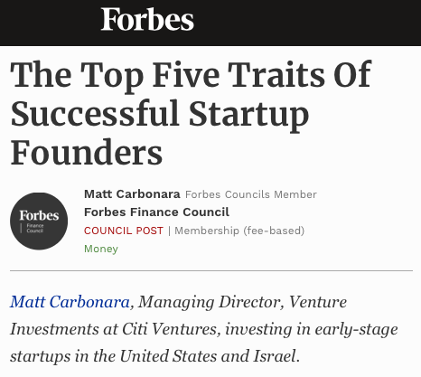

I hope this finds you well. Oli's shared a bit about the exciting work you're doing at Autograph, and I look forward to connecting with you on Thursday to hear more about it.
In the meantime, thanks for taking a look at some of my work. I thought I'd start with a few examples of my professional editorial efforts, but please feel free to skip ahead to the extracurricular stuff.
First up: a Brand Voice project for Ritani, a DTC jeweler that was undergoing a complete rebrand at the time. I served as copywriter on this one, working hand in glove with a strategy team.
Next, here's some Brand Architecture / Innovation Strategy content I helped create for Bud Light. In collaboration with a research team, we explored customer territories and occasions ("Palate Maps" and "Demand Moments"), and I penned the voices behind each.
When the tonychi studio design firm was undergoing a recent reorganization, I was tapped to lead its Brand Identity & Messaging work, producing the Principles below in anticipation of its new website.
In addition to my work with small, boutique brands, I also partner directly with teams at large institutions to lend a hand with their written efforts. On top of the internal marketing content I create for Citi Ventures, I've helmed UX copy for their external products, and I also serve as the ghost writing one investor's ongoing Forbes column seen below.
I once did a little performance piece at the Whitney Museum, attempting to blend art with artist. Here's me on display, getting viewed by visitors making their way through the space.
This is what they were reading (which I like to think of as a sort of Brand Voice exercise in itself):

It was a wonderful experience.
During the pandemic, a friend of mine launched a site reviewing DTC brands and asked me if I'd like to try out some products and then post my two cents in public. Here's one I wrote about a "molecular whiskey," which definitely put my editorial integrity to the test.
A couple years back, a Parisienne friend asked me to help edit her book of English wordplay. I was proud to see it get published a few months ago, and I loved putting my nominal web-development skills to use by transposing it to a digital form.

Thanks again for taking a gander through the above. I'm very much looking forward to meeting you and learning more about Autograph's projects when we chat.
Cheers,
Max